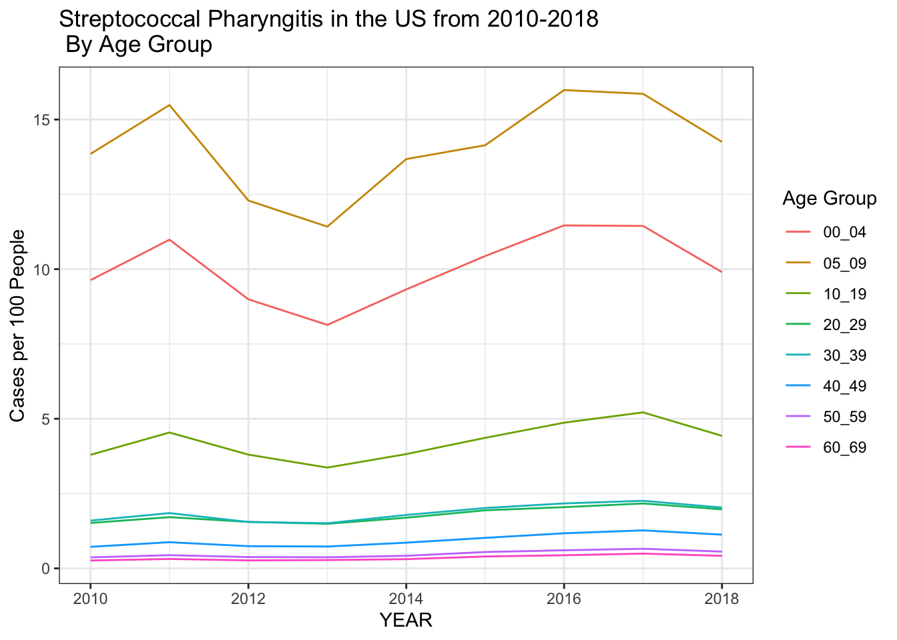
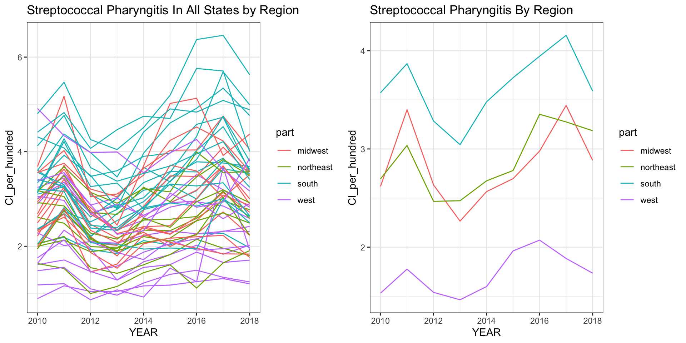
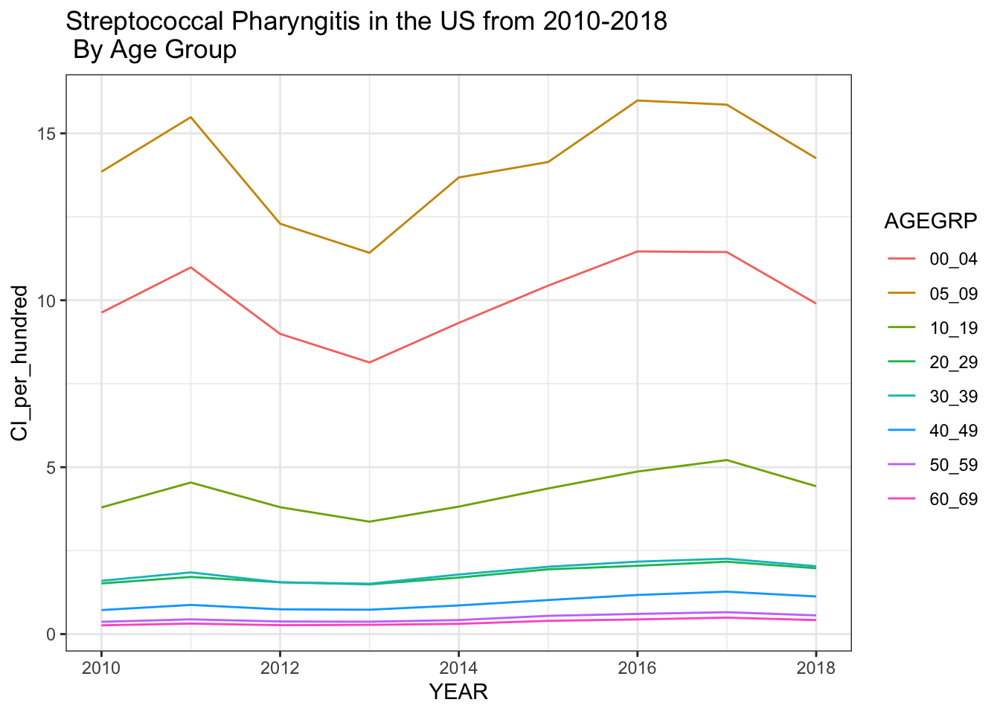

Streptococcal pharyngitis, known colloquially as “strep throat,” is
the number one cause of pharyngitis in children, accounting for 15-30%
of pharyngitis between the ages of 5-15, and up to as many as 35-40% of
cases during the winter and early spring. There is an estimated
prevalence of 37% among children[1][2][3] . Symptoms typically include a
characteristic sore throat, sometimes alongside fever, abdominal pain,
or headache. Streptococcal pharyngitis is caused by group A
Streptococcus, or Streptococcus pyogenes, and is
clearly diagnosed with the rapid antigen detection test, throat culture,
or NAAT. Treatment with the appropriate penicillin antibiotics is
recommended to decrease the chance of some complications, including
acute rheumatic fever, which can cause lasting cardiac valvular damage.
There are known geographic patterns across the US for some other
respiratory illnesses, including influenza, which starts in the
Southeast and subsequently rises in other parts of the country [4].
Comparatively little is known about the geographic distribution of
streptococcal pharyngitis in the US.
The MarketScan database, comprised of insurance claims data from private
insurers across the US, provides an opportunity to investigate the
distribution of streptococcal pharyngitis in the US. Claims data for
streptococcal pharyngitis were extracted from MarketScan, separated by
year from 2010 to 2018, month, sex, age group (by decile with the
youngest age group split between 0-4 and 5-9), and state. Data for flu
with the same properties were also extracted from MarketScan for
comparison, and vaccination data for flu and PCV were obtained through
CDC FluVax and ChildVax respectively. The question we seek to address is
whether rates of streptococcal pharyngitis are different in different
parts of the country throughout the year and across years, and if so,
what factors contribute to these differences.
We can see from this graph that the cases per person of streptococcal pharyngitis are relatively stable from year to year between 2010-2018, with slightly more cases in 2011 and 2016-217. We next separate by age.

Here we see that streptococcal pharyngitis is most common in 5-9 year
olds, followed by 0-4 year olds, then 10-19 year olds, and there are not
many cases in people older than 20, which is consistent with the known
age distribution of streptococcal pharyngitis as stated above.
We can split this data by region to see if there are trends that differ
in different parts of the country. We divide the country into 4 regions,
Northeast (comprised of Connecticut, Massachusetts, Maine, New
Hampshire, Rhode Island, Vermont, New Jersey, New York, and
Pennsylvania), Midwest (comprised of Illinois, Indiana, Michigan, Ohio,
Wisconsin, Iowa, Kansas, Minnesota, Missouri, Nebraska, North Dakota,
and South Dakata), South (comprised of Delaware, Florida, Georgia,
Maryland, North Carolina, South Carolina, Virginia, West Virginia,
Alabama, Kentucky, Mississippi, Tennessee, Arizona, Louisiana, Oklahoma,
and Texas), and West (comprised of Arizona, Colorado, Indiana, Montana,
Nevada, New Mexico, Utah, Wyoming, Arkansas, California, Hawaii, Oregon,
and Washington).

From this plot we can see that streptococcal pharyngitis cases are
generally higher in the South, and lower in the West, and that this
trend holds across time. We can further stratify case data by month to
see if there are differences in trends throughout the year by
region.

We see that the West has fewer cases of streptococcal pharyngitis throughout the year. The South tracks pretty well with the Northeast and Midwest through the beginning of the year, but cases rise earlier and higher starting at the end of the summer and into the fall. My analysis will seek to identify what factors drive this regional difference in case rates.
knitr::opts_chunk$set(echo = TRUE)
library(tidyverse)
library(stringr)
library(ggplot2)
library(usmap)
library(gridExtra)
library(maps)
library(mapdata)
library(ggmap)
library(lmtest)
#Read in data on cases
dat <- read_csv("/Users/madeleinekline/Dropbox (Harvard University)/G1/GradLab/StrepPharyngitis/output/GeoVisits.csv")
#Read in data on membership
coh <- read_csv("/Users/madeleinekline/Dropbox (Harvard University)/G1/GradLab/StrepPharyngitis/output/GeoCohort.csv")
#this dataframe has population by sex, age group, and state but not by month. So need to add it to the other dataframe once already collapsed by year.
#get data by year, rather than by month:
by_year <- aggregate(NVISITS ~ YEAR + STATE + SEX + AGEGRP + PRIMARYCOND, dat, sum)
#we can then join this with the population data from cohort
by_year <- left_join(by_year, coh)
by_year |> group_by(YEAR) |> summarize(total_vis = sum(NVISITS), total_memb = sum(NMEMB), CI = round(total_vis/total_memb,4)) |> ggplot(aes(x=YEAR, y = CI)) + geom_bar(stat = "identity", fill = "steelblue") + theme_bw() + geom_text(aes(label=CI), vjust=1.6, color="white", size=2.0) + ylab("Cases per person") + ggtitle("Total Strep Pharyngitis Visits per Member by Year US")
#let's summarize cumulative incidence by state across years to start
by_state <- by_year |>
group_by(YEAR, STATE) |>
summarize(visits = sum(NVISITS), members = sum(NMEMB), CI = visits/members)
#we now manipulate the data slightly to show CI per hundred, and make the state names match the mapping dataframe
strep_all <- by_state |> mutate(region = tolower(STATE), CI_per_hundred = CI*100) |>
select(region, CI_per_hundred)
#now we add region designations for "northeast", "south", "midwest", and "west"
#add regions to this dataframe
#make a function that converts lists of state abbreviations to lists of state names
to_statename <- function(list){
new_list <- c()
for(i in 1:length(list)){
name <- state.name[grep(list[i], state.abb)]
new_list <- append(new_list, name)
}
new_list
}
northeast_states <- tolower(to_statename(.northeast_region))
midwest_states <- tolower(to_statename(.midwest_region))
south_states <- tolower(to_statename(.south_region))
west_states <- tolower(to_statename(.west_region))
northeast_df <- data.frame(region = northeast_states, part = "northeast")
midwest_df <- data.frame(region = midwest_states, part = "midwest")
south_df <- data.frame(region = south_states, part = "south")
west_df <- data.frame(region = west_states, part = "west")
#will put dc in the south because maryland and viriginia are
dc_df <- data.frame(region = "washington dc", part = "south")
state_parts <- rbind(northeast_df, midwest_df, south_df, west_df, dc_df)
strep_all_region <- left_join(strep_all, state_parts, by = "region")
#now we look at the data by age group across all regions
by_year <- by_year |> mutate("state" = STATE)
by_year_age_visits <- aggregate(NVISITS ~ YEAR + state + AGEGRP + PRIMARYCOND, dat = by_year, sum)
by_year_age_membs <- aggregate(NMEMB ~ YEAR + state + AGEGRP + PRIMARYCOND, dat = by_year, sum)
by_year_age <- left_join(by_year_age_visits, by_year_age_membs)
by_year_age <- by_year_age |> mutate(CI_per_hundred = NVISITS/NMEMB *100, state = tolower(state))
#add in region just in case?
state_parts_2 <- state_parts
names(state_parts_2)[1] <- "state"
by_year_age <- left_join(by_year_age, state_parts_2)
#make a plot of trends over time by state
country_by_age <- left_join(aggregate(NVISITS ~ AGEGRP + YEAR, dat = by_year_age, sum), aggregate(NMEMB ~ AGEGRP + YEAR, dat = by_year_age, sum))
country_by_age <- country_by_age |> mutate(CI_per_hundred = NVISITS/NMEMB * 100)
country_by_age |> ggplot(aes(YEAR, CI_per_hundred, group = AGEGRP)) + geom_line(aes(color = AGEGRP)) + ggtitle("Streptococcal Pharyngitis in the US from 2010-2018 \n By Age Group") + theme_bw() + ylab("Cases per 100 People") + labs(color = "Age Group")
states_indiv_region <- strep_all_region |> group_by(YEAR, region) |> ggplot(aes(YEAR, CI_per_hundred, group=region)) + geom_line(aes(col = part)) + ggtitle("Streptococcal Pharyngitis In All States by Region") + ylab("Cases per 100 People") + theme_bw() + labs(color = "Region")
#now group them by region and just report 1 value per region
by_state_2 <- by_state |> mutate(state = tolower(STATE))
strep_region_visits <- left_join(by_state_2, state_parts_2, by = "state")
strep_region_visits_agg <- aggregate(visits~ part + YEAR, dat = strep_region_visits, sum)
strep_region_members_agg <- aggregate(members~ part + YEAR, dat = strep_region_visits, sum)
strep_region_joined <- left_join(strep_region_visits_agg, strep_region_members_agg)
strep_region_joined <- strep_region_joined |> mutate(CI_per_hundred = visits/members * 100)
per_region<- strep_region_joined |> group_by(YEAR, part) |> ggplot(aes(YEAR, CI_per_hundred, group=part)) + geom_line(aes(col = part)) + ggtitle("Streptococcal Pharyngitis By Region") +ylab("Cases per 100 People") + theme_bw() + labs(color = "Region")
grid.arrange(states_indiv_region, per_region, ncol=2)
#try by month; first just plot data by region for all age groups together
#should be able to just merge these two because the members are stable over the year
by_month_all <- left_join(dat, coh)
#consolidate across sex and check if this is what you needed to do earlier on as well;
#to consolidate across sex, will just need to add so that should be fine
by_month_age_vis <- aggregate(NVISITS ~ MONTH + STATE + AGEGRP + YEAR, dat = by_month_all, sum)
memb_no_sex <- aggregate(NMEMB ~ STATE +AGEGRP + YEAR, dat = coh, sum)
by_month_no_sex <- left_join(by_month_age_vis, memb_no_sex)
by_month_no_sex <- by_month_no_sex |> mutate("CI_per_thousand" = NVISITS/NMEMB*1000)
by_month_no_sex_lowercase <- by_month_no_sex |> mutate("state" = tolower(STATE))
by_month_regions <- left_join(by_month_no_sex_lowercase, state_parts_2, by = "state")
by_month_regions_only_vis <- aggregate(NVISITS ~ part + YEAR + MONTH,
dat = by_month_regions,
sum)
by_month_regions_only_memb <- aggregate(NMEMB ~ part + YEAR + MONTH,
dat = by_month_regions,
sum)
by_month_regions_only <- left_join(by_month_regions_only_vis, by_month_regions_only_memb)
by_month_regions_only <- by_month_regions_only |> mutate("CI_per_thousand" = NVISITS/NMEMB *1000)
by_month_regions_only |> ggplot(aes(x = MONTH, y = CI_per_thousand, group = part)) +
geom_line(aes(color = part)) +
facet_wrap(~YEAR) + ggtitle("Steptococcal Pharyngitis Cases Incidence by Month \n All Ages, by Region") + labs(color = "Region") + ylab("Cases per 1,000 People") +scale_x_discrete(limits = c("JAN", "FEB", "MAR", "APR", "MAY", "JUN", "JUL", "AUG", "SEPT",
"OCT", "NOV", "DEC")) + theme(axis.text.x = element_text(angle = 90, vjust = 0.5, hjust=1)) + theme_bw()